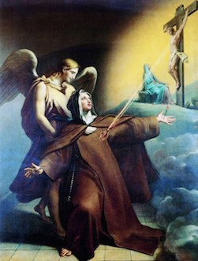

Transverberation is a spiritual
wounding of the heart. Saints were
sometimes rewarded by God for loving him so much that they
offered the Lord total dominion over their
heart.
☞ Curated and built by
Ana Garriga and Maria
Izquierdo
Fig 1
Fig 2
Veíale en las manos un dardo de oro
largo, y al fin del hierro me parecía tener un poco de
fuego. Este me parecía meter por el corazón algunas veces y
que me llegaba a las entrañas. Al sacarle, me parecía las
llevaba consigo, y me dejaba toda abrasada en amor grande
de Dios. Era tan grande el dolor, que me hacía dar aquellos
quejidos, y tan excesiva la suavidad que me pone este
grandísimo dolor, que no hay desear que se quite, ni se
contenta el alma con menos que Dios. No es dolor corporal
sino espiritual, aunque no deja de participar el cuerpo
algo, y aun harto. Es un requiebro tan suave que pasa entre
el alma y Dios, que suplico yo a su bondad lo dé a gustar a
quien pensare que miento.
—St Teresa of Avila. 1515 ✝
1582
Libro de la vida, cap. 29, XXXIII
Peter Paul Rubens, 1961

Fig 2
A instantes el amor pierde en ella
hasta tal punto la medida, brota con una tal vehemencia y
agita el corazón con tal fuerza y tan furiosamente que éste
parece herido por todos lados y sus heridas no cesan de
renovarse, cada día con dolor más amargo y con nueva
intensidad. Y le parece que sus venas se rompen, que su
sangre se derrama, que su médula se marchita: sus huesos
desfallecen, su pecho arde, su garganta se seca, su rostro
y todos sus miembros sienten el calor interior y el furor
de amor. Otras veces es como una flecha que atraviesa su
corazón hasta la garganta y más allá hasta el cerebro y le
hace perder el sentido, o como un fuego devorador que atrae
cuanto puede consumir; tal es la violencia con la que
experimenta el alma en su interior la acción de amor,
implacable, sin medida, apaderándose de todo y devorándolo
todo.
—Beatriz of Nazaret. 1200 ✝
1269
Los siete modos de amor, V, 33-55
Fig 1
Y diciendo así, lo puso en la llaga de
su costado, me hizo ver su corazón muy resplandeciente y
puso el mío sobre su mismo corazón. Entonces mi corazón
quedó del todo encendido, como una llama de fuego. El Señor
volvió a tomarlo en su mano, lo miraba fijamente y lo
estrechaba fuertemente. Yo veía dicho corazón todo fuego,
con las cinco llagas y traspasado de parte a parte. El
Señor lo dio a su Santísima Madre y lo puso justo sobre su
corazón de Ella. Ella lo tomó con su mano y lo donó a su
Hijo con su propio corazón, y con el de su mismo Hijo. El
Señor lo volvió a meter en mi pecho; pero parecía que me
metía un incendio. Sentía como si me abrasara.